Чтобы начать работу с CRYENGINE, вам необходимо сначала создать или импортировать проект. Это будет основой вашей игры.
Создание проектов
Проекты можно создавать с помощью панели запуска или, в случае более поздних версий CRYENGINE, с помощью самого редактора Sandbox.
Чтобы создать новый проект для конкретной версии CRYENGINE через панель запуска, вот что вам нужно сделать:
Откройте Проекты вкладку в панели запуска и нажмите кнопку в правом верхнем углу панели управления. Это вызывает Выберите версию двигателя подсказка, как показано:
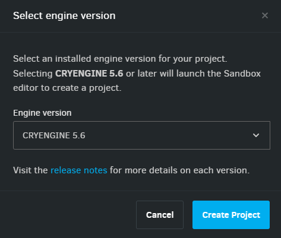
Выберите версию двигателя- Выберите, какую установленную версию CRYENGINE вы хотите использовать в своем проекте.
CRYENGINE 5.6 и более поздние версии
Начиная с CRYENGINE версии 5.6 и далее, проекты создаются непосредственно в редакторе Sandbox через браузер проектов.
Если вы решите создать свой проект через панель запуска с CRYENGINE 5.6 или более поздней версии, появится следующее приглашение:
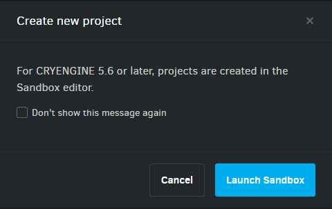
Создать новый проект - 5.6.x
- Нажмите Запустить Sandbox чтобы открыть браузер проектов редактора Sandbox, в котором перечислены шаблоны, которые можно использовать для создания проектов.
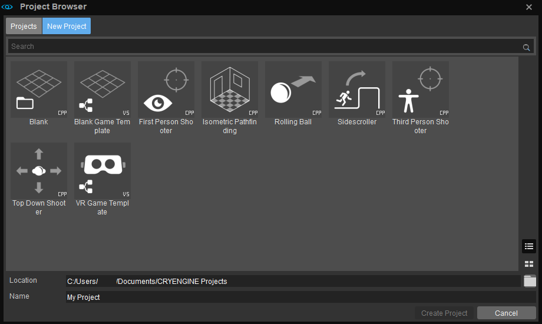
Новый проект Выберите template, укажите место его хранения и имя и нажмите Создать проект чтобы завершить процесс. После этого ваш проект откроется в редакторе Sandbox, а также будет указан в библиотеке проектов средства запуска.
CRYENGINE Версии до 5.6
- При выборе создания проекта в версиях CRYENGINE ранее, чем 5.6, в панели запуска откроется следующая панель мониторинга:
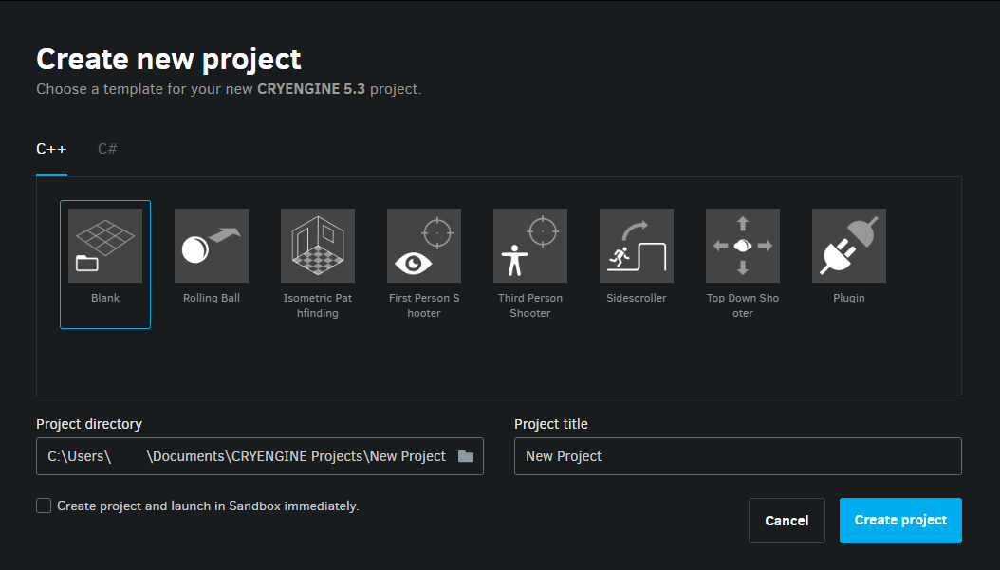
Создать панель управления новым проектом Выберите template для своего проекта, укажите его каталог и имя и нажмите Создать проект. Проект будет добавлен в библиотеку проектов программы запуска.
- Если Создать проект и немедленно запустить его в Sandbox установлен флажок, проект откроется в редакторе Sandbox сразу после того, как вы нажмете кнопку Создать проект кнопка.
- Чтобы открыть проект, если вы не установили флажок:
- Перейдите к Проекты вкладка Лаунчера.
- Найдите свой проект и нажмите кнопку

- Выберите Запустить в редакторе Sandbox вариант из открывшегося меню.
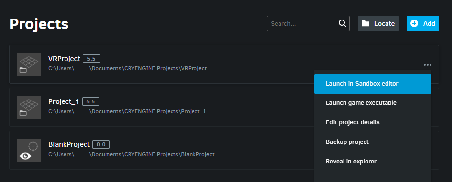
Запустить в редакторе Sandbox
Импорт проектов
Чтобы импортировать ранее созданный проект CRYENGINE, которого нет в списке в панели запуска:
- Нажмите кнопку Проекты в панели запуска, чтобы открыть библиотеку проектов.
- В правом верхнем углу библиотеки проектов нажмите
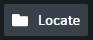
Импортированный проект будет указан в библиотеке проектов.
Импорт проектов, созданных с использованием версий Launcher до V.1.6.6 (доступных с 18 мая 2017 г.), может привести к изменению их названий; например, импортированный проект может быть автоматически переименован в «Пустой шаблон игры».
Чтобы это исправить;
- Выберите проект, который вы хотите обновить.
- Нажмите кнопку кнопку в своем списке.
- Выберите Редактировать детали проекта вариант из меню.
- Измените название проекта в Название проекта поле открывшейся панели редактирования проекта.
Обновление проектов
Проекты, созданные в CRYENGINE версия 5.2 и далее может быть обновлен для работы с более новыми версиями Engine.
Для этого действуйте следующим образом:
- Нажмите кнопку Проекты в панели запуска, чтобы открыть библиотеку проектов.
Выберите проект, который хотите обновить, нажмите кнопку в его списке и выберите Редактировать детали проекта опция из меню
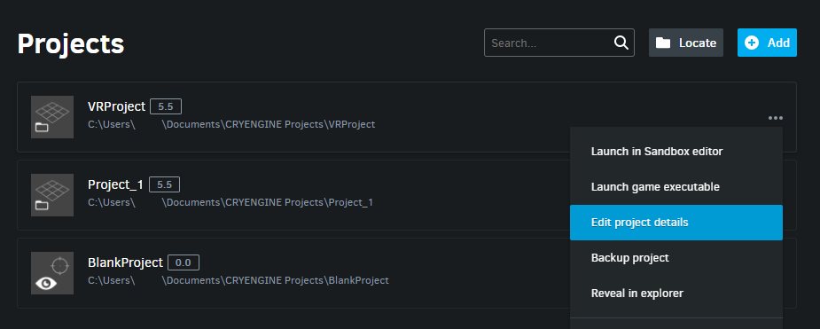
Изменить сведения о проектеОткроется панель редактирования проекта; прокрутите вниз до Версия двигателя поле и выберите целевую версию движка в раскрывающемся списке. Нажмите Сохранить изменения продолжить.
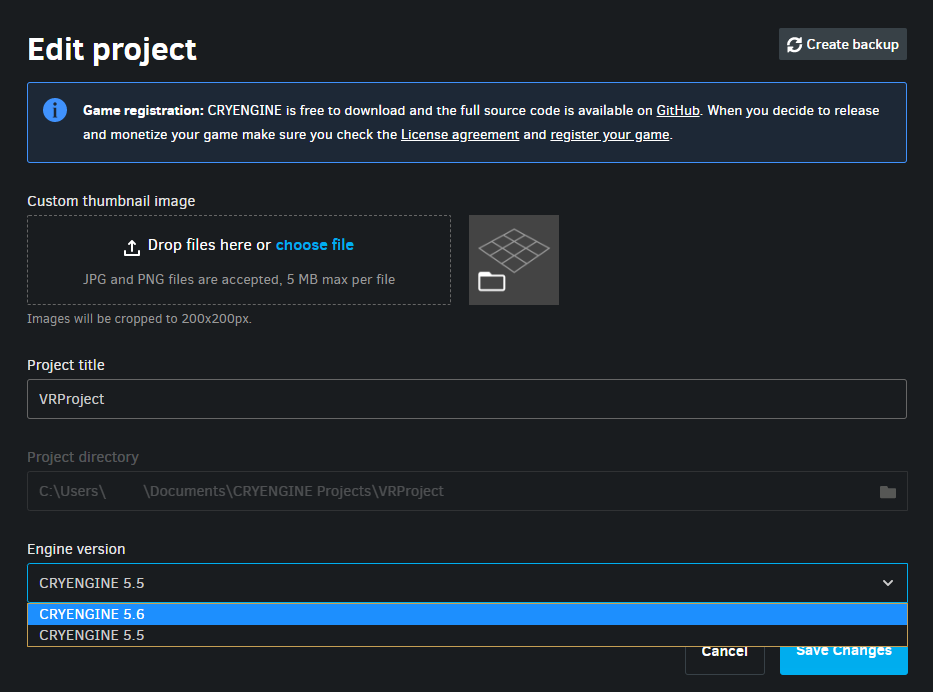
Версия двигателяЗатем вам будет предложено подтвердить переключение версии движка. Нажмите Переключить версию двигателя продолжить.
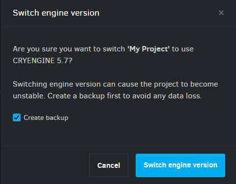
Подтверждение версии Switch EngineОбязательно отметьте галочкой Создать резервную копию установите флажок, чтобы избежать потери данных. Если этот флажок установлен, вы сможете создать полную копию вашего проекта и сохранить ее в выбранной вами папке.
При обновлении с более старой версии средства запуска может потребоваться перенести некоторые из ваших ресурсов для правильной синхронизации с обновленной версией средства запуска. В этом случае вы получите следующее сообщение:
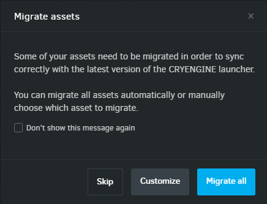
- Щелчок Перенести все после вашего подтверждения инициирует перенос всех ваших активов. Вы увидите подтверждение после завершения миграции.
Щелчок Настроить позволяет вам выбирать, какие активы нужно перенести.
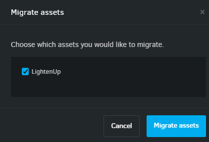
Если вы решите Пропустить на этом шаге вы увидите напоминание для завершения процесса миграции в библиотеке активов.
При обновлении проектов могут возникнуть ошибки из-за различий в интерфейсах разных версий Engine; это можно исправить вручную. В случае непредвиденной ошибки вывод.журнал В каталоге хранилища проекта будет создан файл, который можно просмотреть, чтобы определить причину ошибки.
Однако обратите внимание, что,
- Пользователи, не имеющие опыта работы с игровым кодом, могут предпочесть создать новый проект template в целевой версии движка через панель запуска и скопировать Активы папку исходного проекта в корневой каталог нового проекта.
- Если обновляемый исходный проект был создан с использованием проекта template, новый game.dll Файл должен быть создан путем перекомпиляции решения проекта после выполнения обновления.
- Чтобы перекомпилировать решение, найдите файл проекта .cryproject на диске, щелкните его правой кнопкой мыши и выберите Создать решение опция из контекстного меню.
Если переход на более новую версию Engine по-прежнему не удался, пользователи могут вернуться к предыдущей версии CRYENGINE, повторив шаги, описанные в этом разделе, и выбрав предыдущую версию CRYENGINE из Версия двигателя раскрывающийся список.